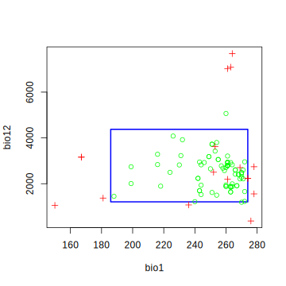
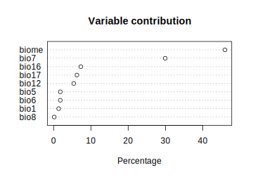
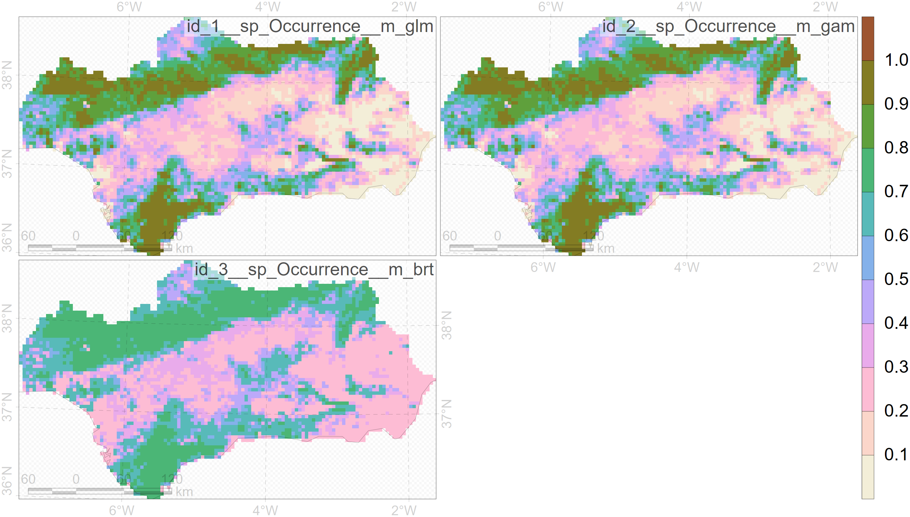
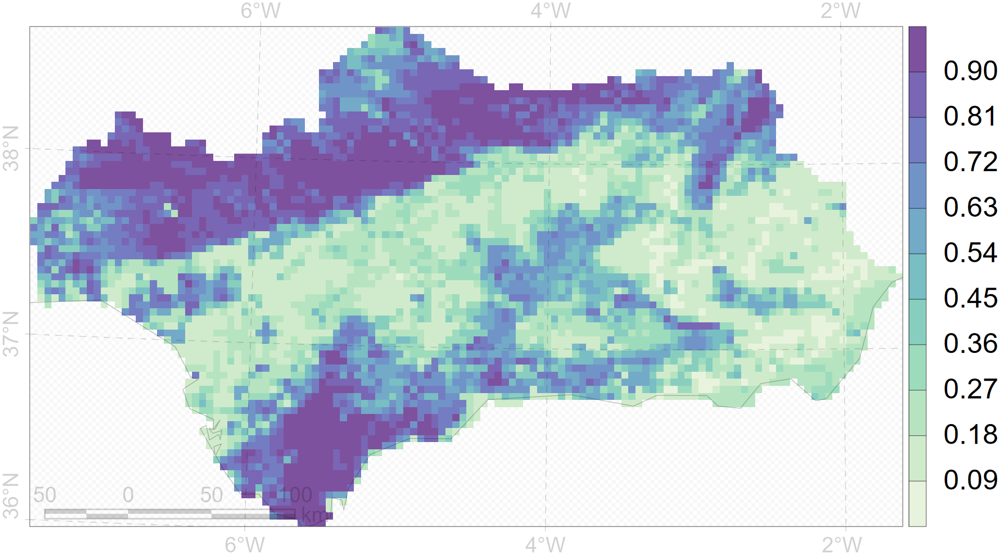

layout: true .banner[ .shorttitle[ [ГИС аспирантура](break.html#home) ] ] --- class: metadata customtitle middle left name: H32169 <iframe width='220' height='220' class='timenow' src='https://www.timeanddate.com/worldclock/fullscreen.html?n=1440' frameborder='0' allow='encrypted-media' allowfullscreen></iframe> .sidebar.left-column[ ## [Подготовка](#H48af2) ## [Моделирование](#H32645) ## [Пакет **`sdm`**](#H57f25) ] .mainbar.right-column[ .author[Никита Платонов] .institute[с.н.с. ИПЭЭ РАН] .title[Моделирование ареалов] .subtitle[ГИС технологии в биологических исследованиях] .what[Занятие 10] .where[] .when[ .updated[Обновлено: 2024-03-07 08:02]] ] --- name: H48af2 .sidebar.left-column[ ## [Подготовка](#H48af2).fg[] ### [Некоторые определения](#H48af2).fg[].bg[] ### [Требуемые пакеты](#H0cfaa) ### [Находки](#He4649) ### [Картооснова](#Hfa07e) ### [Среда обитания](#Hd5ed1) ### [Подвыборки](#H8e661) ### [В итоге](#Hd5bb3) ## [Моделирование](#H32645) ## [Пакет **`sdm`**](#H57f25) ] .mainbar.right-column[ https://besjournals.onlinelibrary.wiley.com/doi/full/10.1111/j.1365-2664.2006.01214.x AUC - Area Under the Receiver Operator Curve (ROC) TSS - True Skill Statistics https://cran.rstudio.com/web/packages/ENMTools/ ] --- name: H0cfaa .sidebar.left-column[ ## [Подготовка](#H48af2).fg[] ### [Некоторые определения](#H48af2) ### [Требуемые пакеты](#H0cfaa).fg[].bg[] ### [Находки](#He4649) ### [Картооснова](#Hfa07e) ### [Среда обитания](#Hd5ed1) ### [Подвыборки](#H8e661) ### [В итоге](#Hd5bb3) ## [Моделирование](#H32645) ## [Пакет **`sdm`**](#H57f25) ] .mainbar.right-column[ .scrollable[ Основной **`dismo`**. Он подгружает **`sp`** для работы с векторными пространственными данными и **`raster`** для работы с растровыми пространственными данными. Данные из пакета **`maptools`** используются для картоосновы. Пакет **`MuMIn`** - для определения оптимального числа независимых переменных Пакет **`kernlab`** - для моделирования методом опорных векторов (SVM) ```r invisible(lapply(c("dismo","maptools","MuMIn","kernlab") ,function(pkg) if (!requireNamespace(pkg)) install.packages(pkg) else 0L )) ``` ``` Loading required namespace: dismo ``` ``` Loading required namespace: maptools ``` ``` Please note that 'maptools' will be retired during October 2023, plan transition at your earliest convenience (see https://r-spatial.org/r/2023/05/15/evolution4.html and earlier blogs for guidance);some functionality will be moved to 'sp'. Checking rgeos availability: TRUE ``` ``` Loading required namespace: MuMIn ``` ``` Loading required namespace: kernlab ``` ```r require(dismo) ``` ``` Loading required package: dismo ``` ``` Loading required package: raster ``` ``` Loading required package: sp ``` ] ] --- name: He4649 .sidebar.left-column[ ## [Подготовка](#H48af2).fg[] ### [Некоторые определения](#H48af2) ### [Требуемые пакеты](#H0cfaa) ### [Находки](#He4649).fg[].bg[] ### [Картооснова](#Hfa07e) ### [Среда обитания](#Hd5ed1) ### [Подвыборки](#H8e661) ### [В итоге](#Hd5bb3) ## [Моделирование](#H32645) ## [Пакет **`sdm`**](#H57f25) ] .mainbar.right-column[ Данные по бурогорлому ленивцу [<svg aria-hidden="true" role="img" viewBox="0 0 640 512" style="height:1em;width:1.25em;vertical-align:-0.125em;margin-left:auto;margin-right:auto;font-size:inherit;fill:currentColor;overflow:visible;position:relative;"><path d="M640 51.2l-.3 12.2c-28.1.8-45 15.8-55.8 40.3-25 57.8-103.3 240-155.3 358.6H415l-81.9-193.1c-32.5 63.6-68.3 130-99.2 193.1-.3.3-15 0-15-.3C172 352.3 122.8 243.4 75.8 133.4 64.4 106.7 26.4 63.4.2 63.7c0-3.1-.3-10-.3-14.2h161.9v13.9c-19.2 1.1-52.8 13.3-43.3 34.2 21.9 49.7 103.6 240.3 125.6 288.6 15-29.7 57.8-109.2 75.3-142.8-13.9-28.3-58.6-133.9-72.8-160-9.7-17.8-36.1-19.4-55.8-19.7V49.8l142.5.3v13.1c-19.4.6-38.1 7.8-29.4 26.1 18.9 40 30.6 68.1 48.1 104.7 5.6-10.8 34.7-69.4 48.1-100.8 8.9-20.6-3.9-28.6-38.6-29.4.3-3.6 0-10.3.3-13.6 44.4-.3 111.1-.3 123.1-.6v13.6c-22.5.8-45.8 12.8-58.1 31.7l-59.2 122.8c6.4 16.1 63.3 142.8 69.2 156.7L559.2 91.8c-8.6-23.1-36.4-28.1-47.2-28.3V49.6l127.8 1.1.2.5z"/></svg>](https://ru.wikipedia.org/wiki/Бурогорлый_ленивец) ```r bradypus <- read.table(file.path(system.file(package="dismo"),"ex/bradypus.csv") ,header=TRUE,sep=',') str(bradypus) ``` ``` 'data.frame': 116 obs. of 3 variables: $ species: chr "Bradypus variegatus" "Bradypus variegatus" "Bradypus variegatus" "Bradypus variegatus" ... $ lon : num -65.4 -65.4 -65.1 -63.7 -63.9 ... $ lat : num -10.4 -10.4 -16.8 -17.4 -17.4 ... ``` .pull-left-60[ ```r head(bradypus) ``` ``` species lon lat 1 Bradypus variegatus -65.4000 -10.3833 2 Bradypus variegatus -65.3833 -10.3833 3 Bradypus variegatus -65.1333 -16.8000 4 Bradypus variegatus -63.6667 -17.4500 5 Bradypus variegatus -63.8500 -17.4000 6 Bradypus variegatus -64.4167 -16.0000 ``` ] .pull-right-40[ <img src="assets/lesson10//ursa01_bradypus.png" width="1330" height="300" bound style="display: block; margin: auto;" /> ] ] --- name: Hfa07e .sidebar.left-column[ ## [Подготовка](#H48af2).fg[] ### [Некоторые определения](#H48af2) ### [Требуемые пакеты](#H0cfaa) ### [Находки](#He4649) ### [Картооснова](#Hfa07e).fg[].bg[] ### [Среда обитания](#Hd5ed1) ### [Подвыборки](#H8e661) ### [В итоге](#Hd5bb3) ## [Моделирование](#H32645) ## [Пакет **`sdm`**](#H57f25) ] .mainbar.right-column[ Использование векторной карты границ государств в качестве картографической основы ```r data(wrld_simpl,package="maptools") op <- par(mar=rep(0,4)) plot(wrld_simpl) ``` <img src="assets/lesson10/wrld-simpl-1.svg" width="1330" height="440" style="display: block; margin: auto;" /> ```r par(op) ``` ] --- name: Hd5ed1 .sidebar.left-column[ ## [Подготовка](#H48af2).fg[] ### [Некоторые определения](#H48af2) ### [Требуемые пакеты](#H0cfaa) ### [Находки](#He4649) ### [Картооснова](#Hfa07e) ### [Среда обитания](#Hd5ed1) <span class="bullet bullet-active">[•](#Hd5ed1)</span><span class="bullet mslide13m">[•](#H508a2)</span><span class="bullet mslide14m">[•](#Hceeeb)</span><span class="bullet mslide16m">[•](#H20e0d)</span>.fg[].bg[] ### [Подвыборки](#H8e661) ### [В итоге](#Hd5bb3) ## [Моделирование](#H32645) ## [Пакет **`sdm`**](#H57f25) ] .mainbar.right-column[ ```r (predictnames <- dir(file.path(system.file(package="dismo"),'ex') ,pattern='grd$',full.names=TRUE)) ``` ``` [1] "C:/Software/Rlibs43/dismo/ex/bio1.grd" [2] "C:/Software/Rlibs43/dismo/ex/bio12.grd" [3] "C:/Software/Rlibs43/dismo/ex/bio16.grd" [4] "C:/Software/Rlibs43/dismo/ex/bio17.grd" [5] "C:/Software/Rlibs43/dismo/ex/bio5.grd" [6] "C:/Software/Rlibs43/dismo/ex/bio6.grd" [7] "C:/Software/Rlibs43/dismo/ex/bio7.grd" [8] "C:/Software/Rlibs43/dismo/ex/bio8.grd" [9] "C:/Software/Rlibs43/dismo/ex/biome.grd" ``` ```r (predictors <- stack(predictnames) |> brick()) ``` ``` class : RasterBrick dimensions : 192, 186, 35712, 9 (nrow, ncol, ncell, nlayers) resolution : 0.5, 0.5 (x, y) extent : -125, -32, -56, 40 (xmin, xmax, ymin, ymax) crs : +proj=longlat +ellps=WGS84 +towgs84=0,0,0,0,0,0,0 +no_defs source : memory names : bio1, bio12, bio16, bio17, bio5, bio6, bio7, bio8, biome min values : -23, 0, 0, 0, 61, -212, 60, -66, 1 max values : 289, 7682, 2458, 1496, 422, 242, 461, 323, 14 ``` ```r (levels <- sort(unique(na.omit(predictors[["biome"]][])))) ``` ``` [1] 1 2 3 4 5 7 8 9 10 11 12 13 14 ``` ] --- name: H508a2 .sidebar.left-column[ ## [Подготовка](#H48af2).fg[] ### [Некоторые определения](#H48af2) ### [Требуемые пакеты](#H0cfaa) ### [Находки](#He4649) ### [Картооснова](#Hfa07e) ### [Среда обитания](#Hd5ed1) <span class="bullet bullet">[•](#Hd5ed1)</span><span class="bullet bullet-active">[•](#H508a2)</span><span class="bullet mslide14m">[•](#Hceeeb)</span><span class="bullet mslide16m">[•](#H20e0d)</span>.fg[].bg[] ### [Подвыборки](#H8e661) ### [В итоге](#Hd5bb3) ## [Моделирование](#H32645) ## [Пакет **`sdm`**](#H57f25) ] .mainbar.right-column[ ```r plot(predictors) ``` <img src="assets/lesson10/predictors-1.svg" width="1330" height="568" style="display: block; margin: auto;" /> ] --- name: Hceeeb .sidebar.left-column[ ## [Подготовка](#H48af2).fg[] ### [Некоторые определения](#H48af2) ### [Требуемые пакеты](#H0cfaa) ### [Находки](#He4649) ### [Картооснова](#Hfa07e) ### [Среда обитания](#Hd5ed1) <span class="bullet bullet">[•](#Hd5ed1)</span><span class="bullet bullet">[•](#H508a2)</span><span class="bullet bullet-active">[•](#Hceeeb)</span><span class="bullet mslide16m">[•](#H20e0d)</span>.fg[].bg[] ### [Подвыборки](#H8e661) ### [В итоге](#Hd5bb3) ## [Моделирование](#H32645) ## [Пакет **`sdm`**](#H57f25) ] .mainbar.right-column[ Биоклиматические переменные WorldClim ([полный список](https://www.worldclim.org/data/bioclim.html)) || -|- BIO1 | Annual Mean Temperature BIO5 | Max Temperature of Warmest Month BIO6 | Min Temperature of Coldest Month BIO7 | Temperature Annual Range (BIO5-BIO6) BIO8 | Mean Temperature of Wettest Quarter BIO12 | Annual Precipitation BIO16 | Precipitation of Wettest Quarter BIO17 | Precipitation of Driest Quarter Данные можно получить с помощью функции `getData()` из пакета **`raster`**, например: ```r raster::getData('worldclim',var='bio',res=10) ``` Наземные биомы ([данные](https://www.worldwildlife.org/pages/conservation-science-data-and-tools)) || -|- BIOME | Terrestrial biome ] --- name: H20e0d .sidebar.left-column[ ## [Подготовка](#H48af2).fg[] ### [Некоторые определения](#H48af2) ### [Требуемые пакеты](#H0cfaa) ### [Находки](#He4649) ### [Картооснова](#Hfa07e) ### [Среда обитания](#Hd5ed1) <span class="bullet bullet">[•](#Hd5ed1)</span><span class="bullet bullet">[•](#H508a2)</span><span class="bullet bullet">[•](#Hceeeb)</span><span class="bullet bullet-active">[•](#H20e0d)</span>.fg[].bg[] ### [Подвыборки](#H8e661) ### [В итоге](#Hd5bb3) ## [Моделирование](#H32645) ## [Пакет **`sdm`**](#H57f25) ] .mainbar.right-column[ В растре `biome` записаны номинальные характеристики: || -|- 1 | Tropical & Subtropical Moist Broadleaf Forests 2 | Tropical & Subtropical Dry Broadleaf Forests 3 | Tropical & Subtropical Coniferous Forests 4 | Temperate Broadleaf & Mixed Forests 5 | Temperate Conifer Forests 6 | Boreal Forests/Taiga 7 | Tropical & Subtropical Grasslands, Savannas & Shrublands 8 | Temperate Grasslands, Savannas & Shrublands 9 | Flooded Grasslands & Savannas 10| Montane Grasslands & Shrublands 11| Tundra 12| Mediterranean Forests, Woodlands & Scrub 13| Deserts & Xeric Shrublands 14| Mangroves ] --- name: H8e661 .sidebar.left-column[ ## [Подготовка](#H48af2).fg[] ### [Некоторые определения](#H48af2) ### [Требуемые пакеты](#H0cfaa) ### [Находки](#He4649) ### [Картооснова](#Hfa07e) ### [Среда обитания](#Hd5ed1) ### [Подвыборки](#H8e661).fg[].bg[] #### [Присутствие](#He931c) #### [Псевдоотсутствие](#H9eeda) #### [Обучение и тестирование](#H18024) ### [В итоге](#Hd5bb3) ## [Моделирование](#H32645) ## [Пакет **`sdm`**](#H57f25) ] .mainbar.right-column[ Используемый параметр для генератора псевдослучайных чисел. Зафиксированное значение обеспечивает воспроизводимость вычислений. ```r (seed <- sample(100:999,1)) ``` ``` [1] 220 ``` ```r set.seed(seed) ``` Число `1/k` характеризует долю тестовых данных. Разбиваем данные на `k` групп, одна из которых будет тестовая. ```r k <- 5L ``` Выбор номера тестовой группы: ```r (g <- sample(seq(k),1)) ``` ``` [1] 1 ``` ] --- name: He931c .sidebar.left-column[ ## [Подготовка](#H48af2).fg[] ### [Некоторые определения](#H48af2) ### [Требуемые пакеты](#H0cfaa) ### [Находки](#He4649) ### [Картооснова](#Hfa07e) ### [Среда обитания](#Hd5ed1) ### [Подвыборки](#H8e661).fg[] #### [Присутствие](#He931c).fg[].bg[] #### [Псевдоотсутствие](#H9eeda) #### [Обучение и тестирование](#H18024) ### [В итоге](#Hd5bb3) ## [Моделирование](#H32645) ## [Пакет **`sdm`**](#H57f25) ] .mainbar.right-column[ ```r group <- dismo::kfold(bradypus,k) ## group <- sample(seq(k),nrow(pres),replace=TRUE) ## альтернативное группирование str(group) ``` ``` int [1:116] 1 1 1 2 2 4 3 3 5 2 ... ``` ```r table(group) ``` ``` group 1 2 3 4 5 23 23 24 23 23 ``` Формирование точек присутствия и разбиение их на группы для обучения и тестирования ```r pres <- bradypus[,-1] ## presence pres_train <- pres[group!=g,] pres_test <- pres[group==g,] nrow(pres_train) ``` ``` [1] 93 ``` ```r nrow(pres_test) ``` ``` [1] 23 ``` ] --- name: H9eeda .sidebar.left-column[ ## [Подготовка](#H48af2).fg[] ### [Некоторые определения](#H48af2) ### [Требуемые пакеты](#H0cfaa) ### [Находки](#He4649) ### [Картооснова](#Hfa07e) ### [Среда обитания](#Hd5ed1) ### [Подвыборки](#H8e661).fg[] #### [Присутствие](#He931c) #### [Псевдоотсутствие](#H9eeda) <span class="bullet bullet-active">[•](#H9eeda)</span><span class="bullet mslide20m">[•](#He2ae2)</span>.fg[].bg[] #### [Обучение и тестирование](#H18024) ### [В итоге](#Hd5bb3) ## [Моделирование](#H32645) ## [Пакет **`sdm`**](#H57f25) ] .mainbar.right-column[ Используемый пространственный охват .notpull-left[ ```r ext <- raster::extent(-90, -32, -33, 23) opP <- par(mar=c(3,3,1,1)) plot(ext,col="brown") plot(wrld_simpl,col="#FFFFA080",border="orange",add=TRUE) ``` ```r par(opP) ``` ] .notpull-right[ <img src="assets/lesson10/ext-code-1.svg" width="1330" height="450" style="display: block; margin: auto;" /> ] ] --- name: He2ae2 .sidebar.left-column[ ## [Подготовка](#H48af2).fg[] ### [Некоторые определения](#H48af2) ### [Требуемые пакеты](#H0cfaa) ### [Находки](#He4649) ### [Картооснова](#Hfa07e) ### [Среда обитания](#Hd5ed1) ### [Подвыборки](#H8e661).fg[] #### [Присутствие](#He931c) #### [Псевдоотсутствие](#H9eeda) <span class="bullet bullet">[•](#H9eeda)</span><span class="bullet bullet-active">[•](#He2ae2)</span>.fg[].bg[] #### [Обучение и тестирование](#H18024) ### [В итоге](#Hd5bb3) ## [Моделирование](#H32645) ## [Пакет **`sdm`**](#H57f25) ] .mainbar.right-column[ Формирование набора точек псевдоотсутствия ```r backg <- randomPoints(predictors, n=1000, ext=ext, extf = 1.25) colnames(backg) = c('lon', 'lat') head(backg) ``` ``` lon lat [1,] -72.25 -39.75 [2,] -71.75 -4.75 [3,] -68.25 -7.25 [4,] -74.25 1.25 [5,] -66.75 -23.75 [6,] -73.75 -10.75 ``` Присвоения номеров групп для отбора в тестовую группу ```r group <- kfold(backg,k) table(group) ``` ``` group 1 2 3 4 5 200 200 200 200 200 ``` ] --- name: H18024 .sidebar.left-column[ ## [Подготовка](#H48af2).fg[] ### [Некоторые определения](#H48af2) ### [Требуемые пакеты](#H0cfaa) ### [Находки](#He4649) ### [Картооснова](#Hfa07e) ### [Среда обитания](#Hd5ed1) ### [Подвыборки](#H8e661).fg[] #### [Присутствие](#He931c) #### [Псевдоотсутствие](#H9eeda) #### [Обучение и тестирование](#H18024) <span class="bullet bullet-active">[•](#H18024)</span><span class="bullet mslide22m">[•](#H0ca04)</span><span class="bullet mslide23m">[•](#H7ba77)</span><span class="bullet mslide24m">[•](#He5c3e)</span>.fg[].bg[] ### [В итоге](#Hd5bb3) ## [Моделирование](#H32645) ## [Пакет **`sdm`**](#H57f25) ] .mainbar.right-column[ Формирование группы для обучения и группы для тестирования для точек псевдоотсутствия ```r backg_train <- backg[group!=g,] backg_test <- backg[group==g,] ``` Формирование группы для обучения из точек присутствия и точек псевдоотсутствия ```r train <- rbind(pres_train, backg_train) ``` Формирование группы для тестирования из точек присутствия и точек псевдоотсутствия ```r test <- rbind(pres_test, backg_test) ``` Вектор присутствия (значение 1) и отсутствия (значения 0) для обучающей выборки ```r pb_train <- c(rep(1L, nrow(pres_train)), rep(0L, nrow(backg_train))) ``` Вектор присутствия (значение 1) и отсутствия (значения 0) для тестовой выборки ```r pb_test <- c(rep(1L, nrow(pres_test)), rep(0L, nrow(backg_test))) ``` ] --- name: H0ca04 .sidebar.left-column[ ## [Подготовка](#H48af2).fg[] ### [Некоторые определения](#H48af2) ### [Требуемые пакеты](#H0cfaa) ### [Находки](#He4649) ### [Картооснова](#Hfa07e) ### [Среда обитания](#Hd5ed1) ### [Подвыборки](#H8e661).fg[] #### [Присутствие](#He931c) #### [Псевдоотсутствие](#H9eeda) #### [Обучение и тестирование](#H18024) <span class="bullet bullet">[•](#H18024)</span><span class="bullet bullet-active">[•](#H0ca04)</span><span class="bullet mslide23m">[•](#H7ba77)</span><span class="bullet mslide24m">[•](#He5c3e)</span>.fg[].bg[] ### [В итоге](#Hd5bb3) ## [Моделирование](#H32645) ## [Пакет **`sdm`**](#H57f25) ] .mainbar.right-column[ Получение характеристик из растров для точек обучающей выборки ```r envtrain <- extract(predictors, train) |> data.frame() ``` Новый столбец присутствия/отсутствия ```r envtrain <- cbind(pa=pb_train,envtrain) ``` Зададим биом категорией (фактором) ```r envtrain$biome = factor(envtrain$biome,levels=levels) str(envtrain) ``` ``` 'data.frame': 893 obs. of 10 variables: $ pa : int 1 1 1 1 1 1 1 1 1 1 ... $ bio1 : int 243 243 252 240 275 271 274 266 266 239 ... $ bio12: int 1693 1693 2501 1214 2259 2212 2233 2592 2608 1194 ... $ bio16: int 775 775 1081 516 956 807 877 872 957 540 ... $ bio17: int 186 186 280 146 208 281 230 498 306 130 ... $ bio5 : int 318 318 326 317 335 327 329 320 322 313 ... $ bio6 : int 150 150 154 150 231 220 227 214 219 165 ... $ bio7 : int 168 168 172 168 104 107 102 105 103 148 ... $ bio8 : int 264 264 270 261 270 266 269 262 262 252 ... $ biome: Factor w/ 13 levels "1","2","3","4",..: 1 1 1 2 1 1 1 1 1 1 ... ``` ] --- name: H7ba77 .sidebar.left-column[ ## [Подготовка](#H48af2).fg[] ### [Некоторые определения](#H48af2) ### [Требуемые пакеты](#H0cfaa) ### [Находки](#He4649) ### [Картооснова](#Hfa07e) ### [Среда обитания](#Hd5ed1) ### [Подвыборки](#H8e661).fg[] #### [Присутствие](#He931c) #### [Псевдоотсутствие](#H9eeda) #### [Обучение и тестирование](#H18024) <span class="bullet bullet">[•](#H18024)</span><span class="bullet bullet">[•](#H0ca04)</span><span class="bullet bullet-active">[•](#H7ba77)</span><span class="bullet mslide24m">[•](#He5c3e)</span>.fg[].bg[] ### [В итоге](#Hd5bb3) ## [Моделирование](#H32645) ## [Пакет **`sdm`**](#H57f25) ] .mainbar.right-column[ ```r head(envtrain,24) ``` ``` pa bio1 bio12 bio16 bio17 bio5 bio6 bio7 bio8 biome 1 1 243 1693 775 186 318 150 168 264 1 2 1 243 1693 775 186 318 150 168 264 1 3 1 252 2501 1081 280 326 154 172 270 1 4 1 240 1214 516 146 317 150 168 261 2 5 1 275 2259 956 208 335 231 104 270 1 6 1 271 2212 807 281 327 220 107 266 1 7 1 274 2233 877 230 329 227 102 269 1 8 1 266 2592 872 498 320 214 105 262 1 9 1 266 2608 957 306 322 219 103 262 1 10 1 239 1194 540 130 313 165 148 252 1 11 1 251 1617 808 97 312 194 118 246 1 12 1 271 2599 1250 136 325 224 101 267 1 13 1 269 2211 981 196 333 219 114 263 1 14 1 254 2084 1011 137 317 197 119 251 1 15 1 263 1878 893 122 324 212 112 259 1 16 1 260 1882 845 170 324 203 121 255 1 17 1 270 2479 1277 154 331 214 117 267 1 18 1 270 2487 1221 182 329 216 113 268 1 19 1 270 2413 1286 140 330 214 116 268 1 20 1 181 1372 650 114 259 86 172 206 1 21 1 258 2677 879 419 313 200 113 259 1 22 1 216 2835 985 267 277 160 117 212 1 23 1 261 2192 739 222 306 220 87 260 1 24 1 232 3921 1364 365 290 171 119 229 1 ``` ] --- name: He5c3e .sidebar.left-column[ ## [Подготовка](#H48af2).fg[] ### [Некоторые определения](#H48af2) ### [Требуемые пакеты](#H0cfaa) ### [Находки](#He4649) ### [Картооснова](#Hfa07e) ### [Среда обитания](#Hd5ed1) ### [Подвыборки](#H8e661).fg[] #### [Присутствие](#He931c) #### [Псевдоотсутствие](#H9eeda) #### [Обучение и тестирование](#H18024) <span class="bullet bullet">[•](#H18024)</span><span class="bullet bullet">[•](#H0ca04)</span><span class="bullet bullet">[•](#H7ba77)</span><span class="bullet bullet-active">[•](#He5c3e)</span>.fg[].bg[] ### [В итоге](#Hd5bb3) ## [Моделирование](#H32645) ## [Пакет **`sdm`**](#H57f25) ] .mainbar.right-column[ Получение характеристик из растров для точек тестовой выборки ```r envtest <- extract(predictors, test) |> data.frame() envtest <- cbind(pa=pb_test,envtest) envtest$biome = factor(envtest$biome, levels=levels) str(envtest) ``` ``` 'data.frame': 223 obs. of 10 variables: $ pa : int 1 1 1 1 1 1 1 1 1 1 ... $ bio1 : int 263 263 253 274 270 263 260 263 260 199 ... $ bio12: int 1639 1639 3624 2233 2274 1842 1945 1878 1882 2005 ... $ bio16: int 724 724 1547 877 1008 818 880 893 845 657 ... $ bio17: int 62 62 373 230 191 176 143 122 170 256 ... $ bio5 : int 338 338 329 329 331 326 324 324 324 262 ... $ bio6 : int 191 191 150 227 221 204 204 212 203 143 ... $ bio7 : int 147 147 179 102 110 121 120 112 121 119 ... $ bio8 : int 261 261 271 269 266 257 256 259 255 196 ... $ biome: Factor w/ 13 levels "1","2","3","4",..: 1 1 1 1 1 1 1 1 1 1 ... ``` Отдельно пригодятся точки присутствия и псевдоотсутствия тестовой выборки ```r testpres <- envtest[envtest$pa==1,-1] testbackg <- envtest[envtest$pa==0,-1] ``` ] --- name: Hd5bb3 .sidebar.left-column[ ## [Подготовка](#H48af2).fg[] ### [Некоторые определения](#H48af2) ### [Требуемые пакеты](#H0cfaa) ### [Находки](#He4649) ### [Картооснова](#Hfa07e) ### [Среда обитания](#Hd5ed1) ### [Подвыборки](#H8e661) ### [В итоге](#Hd5bb3) <span class="bullet bullet-active">[•](#Hd5bb3)</span><span class="bullet mslide27m">[•](#H7ccab)</span>.fg[].bg[] ## [Моделирование](#H32645) ## [Пакет **`sdm`**](#H57f25) ] .mainbar.right-column[ Обзор размеров выборок ```r data.frame(pres_train=nrow(pres_train),pres_test=nrow(pres_test),pres=nrow(pres) ,backg_train=nrow(backg_train),backg_test=nrow(backg_test) ,train=nrow(train),envtrain=nrow(envtrain) ,test=nrow(test),envtest=nrow(envtest) ,row.names="size") |> t() |> knitr::kable() ``` | | size| |:-----------|----:| |pres_train | 93| |pres_test | 23| |pres | 116| |backg_train | 800| |backg_test | 200| |train | 893| |envtrain | 893| |test | 223| |envtest | 223| ] --- name: H7ccab .sidebar.left-column[ ## [Подготовка](#H48af2).fg[] ### [Некоторые определения](#H48af2) ### [Требуемые пакеты](#H0cfaa) ### [Находки](#He4649) ### [Картооснова](#Hfa07e) ### [Среда обитания](#Hd5ed1) ### [Подвыборки](#H8e661) ### [В итоге](#Hd5bb3) <span class="bullet bullet">[•](#Hd5bb3)</span><span class="bullet bullet-active">[•](#H7ccab)</span>.fg[].bg[] ## [Моделирование](#H32645) ## [Пакет **`sdm`**](#H57f25) ] .mainbar.right-column[ .notpull-left[ ```r opP <- par(mar=c(2.5,2.5,1,1)) plot(!is.na(predictors[[1]]), col=c('white', 'light grey'), legend=FALSE) plot(ext, add=TRUE, col='red', lwd=2) points(backg_train, pch='b', cex=0.5, col='yellow') points(backg_test, pch='b', cex=0.5, col='black') points(pres_train, pch= 'p', col='forestgreen') points(pres_test, pch='p', col='blue') ``` ```r par(opP) ``` ] .notpull-right[ <img src="assets/lesson10/loc-code-1.svg" width="1330" height="405" style="display: block; margin: auto;" /> ] ] --- name: H32645 .sidebar.left-column[ ## [Подготовка](#H48af2) ## [Моделирование](#H32645).fg[] ### [GML](#H32645).fg[] #### [Binomilal/logit](#H32645) <span class="bullet bullet-active">[•](#H32645)</span><span class="bullet mslide31m">[•](#H8cb22)</span><span class="bullet mslide32m">[•](#H15bb7)</span><span class="bullet mslide33m">[•](#H62bc4)</span><span class="bullet mslide34m">[•](#Hfcd8d)</span>.fg[].bg[] #### [Gaussian/identity](#Hb9f76) ### [Bioclim](#Heedd4) ### [Domain](#H45eb2) ### [Mahalanobis](#H3008f) ### [MaxEnt](#H87ad9) ### [Random Forests](#Heb5a0) ### [SVM](#Hdd544) ## [Пакет **`sdm`**](#H57f25) ] .mainbar.right-column[ .font90[ ```r gm1 <- glm(pa ~ bio1 + bio5 + bio6 + bio7 + bio8 + bio12 + bio16 + bio17, family = binomial(link = "logit"), data=envtrain, na.action=na.pass) summary(gm1) ``` ``` Call: glm(formula = pa ~ bio1 + bio5 + bio6 + bio7 + bio8 + bio12 + bio16 + bio17, family = binomial(link = "logit"), data = envtrain, na.action = na.pass) Coefficients: Estimate Std. Error z value Pr(>|z|) (Intercept) 4.6207089 1.6632980 2.778 0.00547 ** bio1 0.0808539 0.0584669 1.383 0.16670 bio5 0.0899725 0.2757493 0.326 0.74421 bio6 -0.1887151 0.2743581 -0.688 0.49155 bio7 -0.1875652 0.2743500 -0.684 0.49418 bio8 0.0092944 0.0247735 0.375 0.70753 bio12 0.0021307 0.0007218 2.952 0.00316 ** bio16 -0.0018109 0.0015041 -1.204 0.22859 bio17 -0.0054811 0.0016447 -3.333 0.00086 *** --- Signif. codes: 0 '***' 0.001 '**' 0.01 '*' 0.05 '.' 0.1 ' ' 1 (Dispersion parameter for binomial family taken to be 1) Null deviance: 596.69 on 892 degrees of freedom Residual deviance: 428.14 on 884 degrees of freedom AIC: 446.14 Number of Fisher Scoring iterations: 8 ``` ] ] --- name: H8cb22 .sidebar.left-column[ ## [Подготовка](#H48af2) ## [Моделирование](#H32645).fg[] ### [GML](#H32645).fg[] #### [Binomilal/logit](#H32645) <span class="bullet bullet">[•](#H32645)</span><span class="bullet bullet-active">[•](#H8cb22)</span><span class="bullet mslide32m">[•](#H15bb7)</span><span class="bullet mslide33m">[•](#H62bc4)</span><span class="bullet mslide34m">[•](#Hfcd8d)</span>.fg[].bg[] #### [Gaussian/identity](#Hb9f76) ### [Bioclim](#Heedd4) ### [Domain](#H45eb2) ### [Mahalanobis](#H3008f) ### [MaxEnt](#H87ad9) ### [Random Forests](#Heb5a0) ### [SVM](#Hdd544) ## [Пакет **`sdm`**](#H57f25) ] .mainbar.right-column[ .font95[ ```r res <- MuMIn::get.models(MuMIn::dredge(gm1),subset=seq(2)) ``` ``` Fixed term is "(Intercept)" ``` ```r gm1 <- res[[1]] summary(gm1) ``` ``` Call: glm(formula = pa ~ bio1 + bio12 + bio17 + bio5 + 1, family = binomial(link = "logit"), data = envtrain, na.action = na.pass) Coefficients: Estimate Std. Error z value Pr(>|z|) (Intercept) 4.7741107 1.6337380 2.922 0.003476 ** bio1 0.0870547 0.0139678 6.233 4.59e-10 *** bio12 0.0012770 0.0002336 5.467 4.58e-08 *** bio17 -0.0038712 0.0010394 -3.724 0.000196 *** bio5 -0.0965186 0.0143858 -6.709 1.96e-11 *** --- Signif. codes: 0 '***' 0.001 '**' 0.01 '*' 0.05 '.' 0.1 ' ' 1 (Dispersion parameter for binomial family taken to be 1) Null deviance: 596.69 on 892 degrees of freedom Residual deviance: 430.23 on 888 degrees of freedom AIC: 440.23 Number of Fisher Scoring iterations: 7 ``` ] ] --- name: H15bb7 .sidebar.left-column[ ## [Подготовка](#H48af2) ## [Моделирование](#H32645).fg[] ### [GML](#H32645).fg[] #### [Binomilal/logit](#H32645) <span class="bullet bullet">[•](#H32645)</span><span class="bullet bullet">[•](#H8cb22)</span><span class="bullet bullet-active">[•](#H15bb7)</span><span class="bullet mslide33m">[•](#H62bc4)</span><span class="bullet mslide34m">[•](#Hfcd8d)</span>.fg[].bg[] #### [Gaussian/identity](#Hb9f76) ### [Bioclim](#Heedd4) ### [Domain](#H45eb2) ### [Mahalanobis](#H3008f) ### [MaxEnt](#H87ad9) ### [Random Forests](#Heb5a0) ### [SVM](#Hdd544) ## [Пакет **`sdm`**](#H57f25) ] .mainbar.right-column[ ```r (e1 <- evaluate(p=testpres,a=testbackg,model=gm1)) ``` ``` class : ModelEvaluation n presences : 23 n absences : 200 AUC : 0.8080435 cor : 0.2697314 max TPR+TNR at : -2.130065 ``` ```r (tr <- threshold(e1)) ``` ``` thresholds kappa -0.1243086 spec_sens -2.1300654 no_omission -3.1009445 prevalence 0.1558980 equal_sens_spec -1.9755746 sensitivity -2.6779305 ``` ] --- name: H62bc4 .sidebar.left-column[ ## [Подготовка](#H48af2) ## [Моделирование](#H32645).fg[] ### [GML](#H32645).fg[] #### [Binomilal/logit](#H32645) <span class="bullet bullet">[•](#H32645)</span><span class="bullet bullet">[•](#H8cb22)</span><span class="bullet bullet">[•](#H15bb7)</span><span class="bullet bullet-active">[•](#H62bc4)</span><span class="bullet mslide34m">[•](#Hfcd8d)</span>.fg[].bg[] #### [Gaussian/identity](#Hb9f76) ### [Bioclim](#Heedd4) ### [Domain](#H45eb2) ### [Mahalanobis](#H3008f) ### [MaxEnt](#H87ad9) ### [Random Forests](#Heb5a0) ### [SVM](#Hdd544) ## [Пакет **`sdm`**](#H57f25) ] .mainbar.right-column[ ```r (pg <- predict(predictors, gm1, ext=ext)) ``` ``` class : RasterLayer dimensions : 112, 116, 12992 (nrow, ncol, ncell) resolution : 0.5, 0.5 (x, y) extent : -90, -32, -33, 23 (xmin, xmax, ymin, ymax) crs : +proj=longlat +ellps=WGS84 +towgs84=0,0,0,0,0,0,0 +no_defs source : memory names : layer values : -12.62665, 3.556058 (min, max) ``` ] --- name: Hfcd8d .sidebar.left-column[ ## [Подготовка](#H48af2) ## [Моделирование](#H32645).fg[] ### [GML](#H32645).fg[] #### [Binomilal/logit](#H32645) <span class="bullet bullet">[•](#H32645)</span><span class="bullet bullet">[•](#H8cb22)</span><span class="bullet bullet">[•](#H15bb7)</span><span class="bullet bullet">[•](#H62bc4)</span><span class="bullet bullet-active">[•](#Hfcd8d)</span>.fg[].bg[] #### [Gaussian/identity](#Hb9f76) ### [Bioclim](#Heedd4) ### [Domain](#H45eb2) ### [Mahalanobis](#H3008f) ### [MaxEnt](#H87ad9) ### [Random Forests](#Heb5a0) ### [SVM](#Hdd544) ## [Пакет **`sdm`**](#H57f25) ] .mainbar.right-column[ ```r op <- par(mfrow=c(1,2),mar=rep(2,4)) plot(pg, main='Binomial/logit, raw values') plot(wrld_simpl, add=TRUE, border='dark grey') plot(pg > tr$spec_sens, main='presence/absence') plot(wrld_simpl, add=TRUE, border='dark grey') points(backg_train, pch='x', cex=0.4,col="lightblue") points(pres_train, pch='o',cex=0.6,col="blue") ``` <img src="assets/lesson10/pgplot-1.svg" width="1330" height="360" style="display: block; margin: auto;" /> ```r par(op) ``` ] --- name: Hb9f76 .sidebar.left-column[ ## [Подготовка](#H48af2) ## [Моделирование](#H32645).fg[] ### [GML](#H32645).fg[] #### [Binomilal/logit](#H32645) #### [Gaussian/identity](#Hb9f76) <span class="bullet bullet-active">[•](#Hb9f76)</span><span class="bullet mslide36m">[•](#H12d6b)</span><span class="bullet mslide37m">[•](#H65d18)</span>.fg[].bg[] ### [Bioclim](#Heedd4) ### [Domain](#H45eb2) ### [Mahalanobis](#H3008f) ### [MaxEnt](#H87ad9) ### [Random Forests](#Heb5a0) ### [SVM](#Hdd544) ## [Пакет **`sdm`**](#H57f25) ] .mainbar.right-column[ .font85[ ```r gm2 <- glm(pa ~ bio1 + bio5 + bio6 + bio7 + bio8 + bio12 + bio16 + bio17, family = gaussian(link = "identity"), data=envtrain, na.action=na.pass) res <- MuMIn::get.models(MuMIn::dredge(gm2) ,subset=seq(2)) ``` ``` Fixed term is "(Intercept)" ``` ```r gm2 <- res[[1]] summary(gm2) ``` ``` Call: glm(formula = pa ~ bio1 + bio12 + bio16 + bio17 + bio7 + bio8 + 1, family = gaussian(link = "identity"), data = envtrain, na.action = na.pass) Coefficients: Estimate Std. Error t value Pr(>|t|) (Intercept) 0.4302355 0.0965364 4.457 9.39e-06 *** bio1 -0.0028736 0.0007403 -3.882 0.000111 *** bio12 0.0003218 0.0000680 4.733 2.58e-06 *** bio16 -0.0004037 0.0001382 -2.922 0.003567 ** bio17 -0.0005735 0.0001617 -3.547 0.000410 *** bio7 -0.0015919 0.0002941 -5.414 7.95e-08 *** bio8 0.0018053 0.0006213 2.906 0.003754 ** --- Signif. codes: 0 '***' 0.001 '**' 0.01 '*' 0.05 '.' 0.1 ' ' 1 (Dispersion parameter for gaussian family taken to be 0.07865704) Null deviance: 83.315 on 892 degrees of freedom Residual deviance: 69.690 on 886 degrees of freedom AIC: 272.6 Number of Fisher Scoring iterations: 2 ``` ] ] --- name: H12d6b .sidebar.left-column[ ## [Подготовка](#H48af2) ## [Моделирование](#H32645).fg[] ### [GML](#H32645).fg[] #### [Binomilal/logit](#H32645) #### [Gaussian/identity](#Hb9f76) <span class="bullet bullet">[•](#Hb9f76)</span><span class="bullet bullet-active">[•](#H12d6b)</span><span class="bullet mslide37m">[•](#H65d18)</span>.fg[].bg[] ### [Bioclim](#Heedd4) ### [Domain](#H45eb2) ### [Mahalanobis](#H3008f) ### [MaxEnt](#H87ad9) ### [Random Forests](#Heb5a0) ### [SVM](#Hdd544) ## [Пакет **`sdm`**](#H57f25) ] .mainbar.right-column[ ```r (e2 <- evaluate(p=testpres,a=testbackg,model=gm2)) ``` ``` class : ModelEvaluation n presences : 23 n absences : 200 AUC : 0.7954348 cor : 0.3242979 max TPR+TNR at : 0.1073717 ``` ```r (tr <- threshold(e2)) ``` ``` thresholds kappa 0.34998472 spec_sens 0.10737170 no_omission 0.06920602 prevalence 0.10306281 equal_sens_spec 0.14142743 sensitivity 0.11206277 ``` ] --- name: H65d18 .sidebar.left-column[ ## [Подготовка](#H48af2) ## [Моделирование](#H32645).fg[] ### [GML](#H32645).fg[] #### [Binomilal/logit](#H32645) #### [Gaussian/identity](#Hb9f76) <span class="bullet bullet">[•](#Hb9f76)</span><span class="bullet bullet">[•](#H12d6b)</span><span class="bullet bullet-active">[•](#H65d18)</span>.fg[].bg[] ### [Bioclim](#Heedd4) ### [Domain](#H45eb2) ### [Mahalanobis](#H3008f) ### [MaxEnt](#H87ad9) ### [Random Forests](#Heb5a0) ### [SVM](#Hdd544) ## [Пакет **`sdm`**](#H57f25) ] .mainbar.right-column[ ```r pg <- predict(predictors, gm2, ext=ext) op <- par(mfrow=c(1,2),mar=rep(2,4)) plot(pg, main='GLM/gaussian, raw values') plot(wrld_simpl, add=TRUE, border='dark grey') plot(pg > tr$spec_sens, main='presence/absence') plot(wrld_simpl, add=TRUE, border='dark grey') points(backg_train, pch='x', cex=0.4,col="lightblue") points(pres_train, pch='o',cex=0.6,col="blue") ``` <img src="assets/lesson10/gm2-1.svg" width="1330" height="360" style="display: block; margin: auto;" /> ```r par(op) ``` ] --- name: Heedd4 .sidebar.left-column[ ## [Подготовка](#H48af2) ## [Моделирование](#H32645).fg[] ### [GML](#H32645) ### [Bioclim](#Heedd4) <span class="bullet bullet-active">[•](#Heedd4)</span><span class="bullet mslide39m">[•](#H8269a)</span><span class="bullet mslide40m">[•](#Hb4f48)</span><span class="bullet mslide41m">[•](#Hc3f3b)</span>.fg[].bg[] ### [Domain](#H45eb2) ### [Mahalanobis](#H3008f) ### [MaxEnt](#H87ad9) ### [Random Forests](#Heb5a0) ### [SVM](#Hdd544) ## [Пакет **`sdm`**](#H57f25) ] .mainbar.right-column[ ```r pred_nf <- dropLayer(predictors,'biome') bc <- bioclim(x=pred_nf, p=pres_train) ``` ```r plot(bc) ## only two predictors ```  ] --- name: H8269a .sidebar.left-column[ ## [Подготовка](#H48af2) ## [Моделирование](#H32645).fg[] ### [GML](#H32645) ### [Bioclim](#Heedd4) <span class="bullet bullet">[•](#Heedd4)</span><span class="bullet bullet-active">[•](#H8269a)</span><span class="bullet mslide40m">[•](#Hb4f48)</span><span class="bullet mslide41m">[•](#Hc3f3b)</span>.fg[].bg[] ### [Domain](#H45eb2) ### [Mahalanobis](#H3008f) ### [MaxEnt](#H87ad9) ### [Random Forests](#Heb5a0) ### [SVM](#Hdd544) ## [Пакет **`sdm`**](#H57f25) ] .mainbar.right-column[ ```r (e <- evaluate(p=pres_test, a=backg_test, model=bc, x=pred_nf)) ``` ``` class : ModelEvaluation n presences : 23 n absences : 200 AUC : 0.7229348 cor : 0.1819576 max TPR+TNR at : 0.06441613 ``` ```r (tr <- threshold(e)) ``` ``` thresholds kappa 0.08592151 spec_sens 0.06441613 no_omission -0.00010000 prevalence 0.10742688 equal_sens_spec 0.10742688 sensitivity 0.05366344 ``` ] --- name: Hb4f48 .sidebar.left-column[ ## [Подготовка](#H48af2) ## [Моделирование](#H32645).fg[] ### [GML](#H32645) ### [Bioclim](#Heedd4) <span class="bullet bullet">[•](#Heedd4)</span><span class="bullet bullet">[•](#H8269a)</span><span class="bullet bullet-active">[•](#Hb4f48)</span><span class="bullet mslide41m">[•](#Hc3f3b)</span>.fg[].bg[] ### [Domain](#H45eb2) ### [Mahalanobis](#H3008f) ### [MaxEnt](#H87ad9) ### [Random Forests](#Heb5a0) ### [SVM](#Hdd544) ## [Пакет **`sdm`**](#H57f25) ] .mainbar.right-column[ ```r op <- par(mar=c(4,4,1,1)) response(bc) ## it's a plot ``` <img src="assets/lesson10/bcresponse-1.svg" width="1330" height="535" style="display: block; margin: auto;" /> ```r par(op) ``` ] --- name: Hc3f3b .sidebar.left-column[ ## [Подготовка](#H48af2) ## [Моделирование](#H32645).fg[] ### [GML](#H32645) ### [Bioclim](#Heedd4) <span class="bullet bullet">[•](#Heedd4)</span><span class="bullet bullet">[•](#H8269a)</span><span class="bullet bullet">[•](#Hb4f48)</span><span class="bullet bullet-active">[•](#Hc3f3b)</span>.fg[].bg[] ### [Domain](#H45eb2) ### [Mahalanobis](#H3008f) ### [MaxEnt](#H87ad9) ### [Random Forests](#Heb5a0) ### [SVM](#Hdd544) ## [Пакет **`sdm`**](#H57f25) ] .mainbar.right-column[ ```r pb <- predict(predictors, bc, ext=ext, progress='') op <- par(mfrow=c(1,2),mar=c(2,2,2,4)) plot(pb, main='Bioclim, raw values') plot(wrld_simpl, add=TRUE, border='dark grey') points(pres_train, pch='+') plot(pb > tr$spec_sens, main='presence/absence') plot(wrld_simpl, add=TRUE, border='dark grey') points(pres_train, pch='+') ``` <img src="assets/lesson10/bcplot-1.svg" width="1330" height="360" style="display: block; margin: auto;" /> ```r par(op) ``` ] --- name: H45eb2 .sidebar.left-column[ ## [Подготовка](#H48af2) ## [Моделирование](#H32645).fg[] ### [GML](#H32645) ### [Bioclim](#Heedd4) ### [Domain](#H45eb2) <span class="bullet bullet-active">[•](#H45eb2)</span><span class="bullet mslide44m">[•](#Hb3994)</span>.fg[].bg[] ### [Mahalanobis](#H3008f) ### [MaxEnt](#H87ad9) ### [Random Forests](#Heb5a0) ### [SVM](#Hdd544) ## [Пакет **`sdm`**](#H57f25) ] .mainbar.right-column[ ```r dm <- domain(pred_nf,pres_train) (e <- evaluate(pres_test, backg_test, dm, pred_nf)) ``` ``` class : ModelEvaluation n presences : 23 n absences : 200 AUC : 0.751413 cor : 0.2683052 max TPR+TNR at : 0.5622301 ``` ```r (tr <- threshold(e))#, 'spec_sens') ``` ``` thresholds kappa 0.6977495 spec_sens 0.5622301 no_omission 0.3059381 prevalence 0.1048314 equal_sens_spec 0.7033948 sensitivity 0.5818449 ``` ] --- name: Hb3994 .sidebar.left-column[ ## [Подготовка](#H48af2) ## [Моделирование](#H32645).fg[] ### [GML](#H32645) ### [Bioclim](#Heedd4) ### [Domain](#H45eb2) <span class="bullet bullet">[•](#H45eb2)</span><span class="bullet bullet-active">[•](#Hb3994)</span>.fg[].bg[] ### [Mahalanobis](#H3008f) ### [MaxEnt](#H87ad9) ### [Random Forests](#Heb5a0) ### [SVM](#Hdd544) ## [Пакет **`sdm`**](#H57f25) ] .mainbar.right-column[ ```r pm <- predict(pred_nf,dm,ext=ext,progress='') ``` ```r op <- par(mfrow=c(1,2),mar=c(2,2,2,4)) plot(pm, main='Domain, raw values') plot(wrld_simpl, add=TRUE, border='dark grey') points(pres_train, pch='+') plot(pm > tr$spec_sens, main='presence/absence') plot(wrld_simpl, add=TRUE, border='dark grey') points(pres_train, pch='+') ``` <img src="assets/lesson10/domainmap-1.svg" width="1330" height="360" style="display: block; margin: auto;" /> ```r par(op) ``` ] --- name: H3008f .sidebar.left-column[ ## [Подготовка](#H48af2) ## [Моделирование](#H32645).fg[] ### [GML](#H32645) ### [Bioclim](#Heedd4) ### [Domain](#H45eb2) ### [Mahalanobis](#H3008f) <span class="bullet bullet-active">[•](#H3008f)</span><span class="bullet mslide46m">[•](#H5d972)</span>.fg[].bg[] ### [MaxEnt](#H87ad9) ### [Random Forests](#Heb5a0) ### [SVM](#Hdd544) ## [Пакет **`sdm`**](#H57f25) ] .mainbar.right-column[ ```r mm <- mahal(pred_nf,pres_train) (e <- evaluate(pres_test, backg_test, mm, pred_nf)) ``` ``` class : ModelEvaluation n presences : 23 n absences : 200 AUC : 0.8530435 cor : 0.1252055 max TPR+TNR at : -0.7110346 ``` ```r (tr <- threshold(e))#, 'spec_sens') ``` ``` thresholds kappa -0.02306848 spec_sens -0.71103460 no_omission -6.03469422 prevalence 0.06405901 equal_sens_spec -1.80153837 sensitivity -2.98427973 ``` ] --- name: H5d972 .sidebar.left-column[ ## [Подготовка](#H48af2) ## [Моделирование](#H32645).fg[] ### [GML](#H32645) ### [Bioclim](#Heedd4) ### [Domain](#H45eb2) ### [Mahalanobis](#H3008f) <span class="bullet bullet">[•](#H3008f)</span><span class="bullet bullet-active">[•](#H5d972)</span>.fg[].bg[] ### [MaxEnt](#H87ad9) ### [Random Forests](#Heb5a0) ### [SVM](#Hdd544) ## [Пакет **`sdm`**](#H57f25) ] .mainbar.right-column[ ```r pm <- predict(pred_nf,mm,ext=ext,progress='') ``` ```r op <- par(mfrow=c(1,2),mar=c(2,2,2,4)) plot(pm, main='Mahalanobis, raw values') plot(wrld_simpl, add=TRUE, border='dark grey') points(pres_train, pch='+') plot(pm > tr$spec_sens, main='presence/absence') plot(wrld_simpl, add=TRUE, border='dark grey') points(pres_train, pch='+') ``` <img src="assets/lesson10/malplot-1.svg" width="1330" height="360" style="display: block; margin: auto;" /> ```r par(op) ``` ] --- name: H87ad9 .sidebar.left-column[ ## [Подготовка](#H48af2) ## [Моделирование](#H32645).fg[] ### [GML](#H32645) ### [Bioclim](#Heedd4) ### [Domain](#H45eb2) ### [Mahalanobis](#H3008f) ### [MaxEnt](#H87ad9) <span class="bullet bullet-active">[•](#H87ad9)</span><span class="bullet mslide48m">[•](#Hba2f0)</span><span class="bullet mslide49m">[•](#Hcd283)</span><span class="bullet mslide50m">[•](#Hadefb)</span>.fg[].bg[] ### [Random Forests](#Heb5a0) ### [SVM](#Hdd544) ## [Пакет **`sdm`**](#H57f25) ] .mainbar.right-column[ ```r # maxent(silent=F) xm <- maxent(predictors, pres_train, factors='biome',silent=TRUE) ``` ``` Loading required namespace: rJava ``` ```r plot(xm) ```  ] --- name: Hba2f0 .sidebar.left-column[ ## [Подготовка](#H48af2) ## [Моделирование](#H32645).fg[] ### [GML](#H32645) ### [Bioclim](#Heedd4) ### [Domain](#H45eb2) ### [Mahalanobis](#H3008f) ### [MaxEnt](#H87ad9) <span class="bullet bullet">[•](#H87ad9)</span><span class="bullet bullet-active">[•](#Hba2f0)</span><span class="bullet mslide49m">[•](#Hcd283)</span><span class="bullet mslide50m">[•](#Hadefb)</span>.fg[].bg[] ### [Random Forests](#Heb5a0) ### [SVM](#Hdd544) ## [Пакет **`sdm`**](#H57f25) ] .mainbar.right-column[ ```r response(xm) ## it's a plot ``` <img src="assets/lesson10/meresp-1.svg" width="1330" height="568" style="display: block; margin: auto;" /> ] --- name: Hcd283 .sidebar.left-column[ ## [Подготовка](#H48af2) ## [Моделирование](#H32645).fg[] ### [GML](#H32645) ### [Bioclim](#Heedd4) ### [Domain](#H45eb2) ### [Mahalanobis](#H3008f) ### [MaxEnt](#H87ad9) <span class="bullet bullet">[•](#H87ad9)</span><span class="bullet bullet">[•](#Hba2f0)</span><span class="bullet bullet-active">[•](#Hcd283)</span><span class="bullet mslide50m">[•](#Hadefb)</span>.fg[].bg[] ### [Random Forests](#Heb5a0) ### [SVM](#Hdd544) ## [Пакет **`sdm`**](#H57f25) ] .mainbar.right-column[ ```r (e <- evaluate(p=pres_test, a=backg_test, model=xm, x=predictors)) ``` ``` class : ModelEvaluation n presences : 23 n absences : 200 AUC : 0.8169565 cor : 0.3662448 max TPR+TNR at : 0.1914705 ``` ```r (tr <- threshold(e)) #, 'spec_sens') ``` ``` thresholds kappa 0.7567566 spec_sens 0.1914705 no_omission 0.1914705 prevalence 0.1030643 equal_sens_spec 0.4062945 sensitivity 0.2909704 ``` ] --- name: Hadefb .sidebar.left-column[ ## [Подготовка](#H48af2) ## [Моделирование](#H32645).fg[] ### [GML](#H32645) ### [Bioclim](#Heedd4) ### [Domain](#H45eb2) ### [Mahalanobis](#H3008f) ### [MaxEnt](#H87ad9) <span class="bullet bullet">[•](#H87ad9)</span><span class="bullet bullet">[•](#Hba2f0)</span><span class="bullet bullet">[•](#Hcd283)</span><span class="bullet bullet-active">[•](#Hadefb)</span>.fg[].bg[] ### [Random Forests](#Heb5a0) ### [SVM](#Hdd544) ## [Пакет **`sdm`**](#H57f25) ] .mainbar.right-column[ ```r px <- predict(predictors,xm,ext=ext,progress='') ``` ```r op <- par(mfrow=c(1,2),mar=c(2,2,2,4)) plot(px, main='Maxent, raw values') plot(wrld_simpl, add=TRUE, border='dark grey') points(pres_train, pch='+') plot(px > tr$spec_sens, main='presence/absence') plot(wrld_simpl, add=TRUE, border='dark grey') points(pres_train, pch='+') ``` <img src="assets/lesson10/meplot-1.svg" width="1330" height="360" style="display: block; margin: auto;" /> ```r par(op) ``` ] --- name: Heb5a0 .sidebar.left-column[ ## [Подготовка](#H48af2) ## [Моделирование](#H32645).fg[] ### [GML](#H32645) ### [Bioclim](#Heedd4) ### [Domain](#H45eb2) ### [Mahalanobis](#H3008f) ### [MaxEnt](#H87ad9) ### [Random Forests](#Heb5a0) <span class="bullet bullet-active">[•](#Heb5a0)</span><span class="bullet mslide52m">[•](#H43e1d)</span><span class="bullet mslide53m">[•](#H34e6e)</span><span class="bullet mslide54m">[•](#Haa827)</span><span class="bullet mslide55m">[•](#Hdd854)</span>.fg[].bg[] ### [SVM](#Hdd544) ## [Пакет **`sdm`**](#H57f25) ] .mainbar.right-column[ ```r require(randomForest) ``` ``` Loading required package: randomForest ``` ``` randomForest 4.7-1.1 ``` ``` Type rfNews() to see new features/changes/bug fixes. ``` ```r model <- pa ~ bio1 + bio5 + bio6 + bio7 + bio8 + bio12 + bio16 + bio17 (rf1 <- randomForest(model, data=envtrain)) ``` ``` Warning in randomForest.default(m, y, ...): The response has five or fewer unique values. Are you sure you want to do regression? ``` ``` Call: randomForest(formula = model, data = envtrain) Type of random forest: regression Number of trees: 500 No. of variables tried at each split: 2 Mean of squared residuals: 0.07132758 % Var explained: 23.55 ``` ] --- name: H43e1d .sidebar.left-column[ ## [Подготовка](#H48af2) ## [Моделирование](#H32645).fg[] ### [GML](#H32645) ### [Bioclim](#Heedd4) ### [Domain](#H45eb2) ### [Mahalanobis](#H3008f) ### [MaxEnt](#H87ad9) ### [Random Forests](#Heb5a0) <span class="bullet bullet">[•](#Heb5a0)</span><span class="bullet bullet-active">[•](#H43e1d)</span><span class="bullet mslide53m">[•](#H34e6e)</span><span class="bullet mslide54m">[•](#Haa827)</span><span class="bullet mslide55m">[•](#Hdd854)</span>.fg[].bg[] ### [SVM](#Hdd544) ## [Пакет **`sdm`**](#H57f25) ] .mainbar.right-column[ ```r model <- factor(pa) ~ bio1 + bio5 + bio6 + bio7 + bio8 + bio12 + bio16 + bio17 (rf2 <- randomForest(model, data=envtrain)) ``` ``` Call: randomForest(formula = model, data = envtrain) Type of random forest: classification Number of trees: 500 No. of variables tried at each split: 2 OOB estimate of error rate: 8.29% Confusion matrix: 0 1 class.error 0 781 19 0.0237500 1 55 38 0.5913978 ``` ] --- name: H34e6e .sidebar.left-column[ ## [Подготовка](#H48af2) ## [Моделирование](#H32645).fg[] ### [GML](#H32645) ### [Bioclim](#Heedd4) ### [Domain](#H45eb2) ### [Mahalanobis](#H3008f) ### [MaxEnt](#H87ad9) ### [Random Forests](#Heb5a0) <span class="bullet bullet">[•](#Heb5a0)</span><span class="bullet bullet">[•](#H43e1d)</span><span class="bullet bullet-active">[•](#H34e6e)</span><span class="bullet mslide54m">[•](#Haa827)</span><span class="bullet mslide55m">[•](#Hdd854)</span>.fg[].bg[] ### [SVM](#Hdd544) ## [Пакет **`sdm`**](#H57f25) ] .mainbar.right-column[ ```r (rf3 <- randomForest(envtrain[,1:8], factor(pb_train))) ``` ``` Call: randomForest(x = envtrain[, 1:8], y = factor(pb_train)) Type of random forest: classification Number of trees: 500 No. of variables tried at each split: 2 OOB estimate of error rate: 0% Confusion matrix: 0 1 class.error 0 800 0 0 1 0 93 0 ``` ] --- name: Haa827 .sidebar.left-column[ ## [Подготовка](#H48af2) ## [Моделирование](#H32645).fg[] ### [GML](#H32645) ### [Bioclim](#Heedd4) ### [Domain](#H45eb2) ### [Mahalanobis](#H3008f) ### [MaxEnt](#H87ad9) ### [Random Forests](#Heb5a0) <span class="bullet bullet">[•](#Heb5a0)</span><span class="bullet bullet">[•](#H43e1d)</span><span class="bullet bullet">[•](#H34e6e)</span><span class="bullet bullet-active">[•](#Haa827)</span><span class="bullet mslide55m">[•](#Hdd854)</span>.fg[].bg[] ### [SVM](#Hdd544) ## [Пакет **`sdm`**](#H57f25) ] .mainbar.right-column[ ```r (erf <- evaluate(testpres, testbackg, rf1)) ``` ``` class : ModelEvaluation n presences : 23 n absences : 200 AUC : 0.8495652 cor : 0.4444234 max TPR+TNR at : 0.1114333 ``` ```r (tr <- threshold(erf)) ``` ``` thresholds kappa 0.24943333 spec_sens 0.11143333 no_omission 0.01856667 prevalence 0.10080000 equal_sens_spec 0.12750000 sensitivity 0.07810000 ``` ] --- name: Hdd854 .sidebar.left-column[ ## [Подготовка](#H48af2) ## [Моделирование](#H32645).fg[] ### [GML](#H32645) ### [Bioclim](#Heedd4) ### [Domain](#H45eb2) ### [Mahalanobis](#H3008f) ### [MaxEnt](#H87ad9) ### [Random Forests](#Heb5a0) <span class="bullet bullet">[•](#Heb5a0)</span><span class="bullet bullet">[•](#H43e1d)</span><span class="bullet bullet">[•](#H34e6e)</span><span class="bullet bullet">[•](#Haa827)</span><span class="bullet bullet-active">[•](#Hdd854)</span>.fg[].bg[] ### [SVM](#Hdd544) ## [Пакет **`sdm`**](#H57f25) ] .mainbar.right-column[ ```r pr <- predict(predictors, rf1, ext=ext) ``` ```r op <- par(mfrow=c(1,2),mar=c(2,2,2,4)) plot(pr, main='Random Forest, regression') plot(wrld_simpl, add=TRUE, border='dark grey') plot(pr > tr$spec_sens, main='presence/absence') plot(wrld_simpl, add=TRUE, border='dark grey') points(pres_train, pch='+') points(backg_train, pch='-',cex=0.4) ``` <img src="assets/lesson10/rf1plot-1.svg" width="1330" height="360" style="display: block; margin: auto;" /> ```r par(op) ``` ] --- name: Hdd544 .sidebar.left-column[ ## [Подготовка](#H48af2) ## [Моделирование](#H32645).fg[] ### [GML](#H32645) ### [Bioclim](#Heedd4) ### [Domain](#H45eb2) ### [Mahalanobis](#H3008f) ### [MaxEnt](#H87ad9) ### [Random Forests](#Heb5a0) ### [SVM](#Hdd544) <span class="bullet bullet-active">[•](#Hdd544)</span><span class="bullet mslide57m">[•](#H338b2)</span>.fg[].bg[] ## [Пакет **`sdm`**](#H57f25) ] .mainbar.right-column[ ### Support Vector Machine (SVM) ```r require(kernlab) ``` ``` Loading required package: kernlab ``` ``` Attaching package: 'kernlab' ``` ``` The following objects are masked from 'package:raster': buffer, rotated ``` ```r svm <- ksvm(pa ~ bio1+bio5+bio6+bio7+bio8+bio12+bio16+bio17, data=envtrain) (esv <- evaluate(p=testpres, a=testbackg, model=svm)) ``` ``` class : ModelEvaluation n presences : 23 n absences : 200 AUC : 0.716087 cor : 0.3402965 max TPR+TNR at : 0.03035942 ``` .font60[ ```r (esv <- evaluate(p=pres_test, a=backg_test, model=svm,x=pred_nf)) ``` ``` class : ModelEvaluation n presences : 23 n absences : 200 AUC : 0.716087 cor : 0.3402965 max TPR+TNR at : 0.03035942 ``` ] ```r (tr <- threshold(esv)) ``` ``` thresholds kappa 0.04289799 spec_sens 0.03035942 no_omission 0.00307440 prevalence 0.10601224 equal_sens_spec 0.02631662 sensitivity 0.00732124 ``` ] --- name: H338b2 .sidebar.left-column[ ## [Подготовка](#H48af2) ## [Моделирование](#H32645).fg[] ### [GML](#H32645) ### [Bioclim](#Heedd4) ### [Domain](#H45eb2) ### [Mahalanobis](#H3008f) ### [MaxEnt](#H87ad9) ### [Random Forests](#Heb5a0) ### [SVM](#Hdd544) <span class="bullet bullet">[•](#Hdd544)</span><span class="bullet bullet-active">[•](#H338b2)</span>.fg[].bg[] ## [Пакет **`sdm`**](#H57f25) ] .mainbar.right-column[ ```r ps <- predict(predictors, svm, ext=ext) ``` ```r op <- par(mfrow=c(1,2),mar=c(2,2,2,4)) plot(ps, main='Support Vector Machine') plot(wrld_simpl, add=TRUE, border='dark grey') plot(ps > tr$spec_sens, main='presence/absence') plot(wrld_simpl, add=TRUE, border='dark grey') points(pres_train, pch='+',cex=0.75) points(backg_train, pch='-', cex=0.25) ``` <img src="assets/lesson10/svplot-1.svg" width="1330" height="360" style="display: block; margin: auto;" /> ```r par(op) ``` ] --- name: H57f25 .sidebar.left-column[ ## [Подготовка](#H48af2) ## [Моделирование](#H32645) ## [Пакет **`sdm`**](#H57f25).fg[] ### [Находки](#H57f25).fg[].bg[] ### [Среда обитания](#Ha4eae) ### [Модели](#H49510) ### [Прогноз](#H12ca8) ] .mainbar.right-column[ ```r # require(raster) fname <- system.file("external/species.shp", package="sdm") # get the location of the species shapefile species <- sf::st_read(fname,quiet=TRUE) |> sf::as_Spatial() ``` <img src="assets/lesson10//ursa03_species.png" width="1330" height="356" bound style="display: block; margin: auto;" /> ```r table(species$Occurrence) ``` ``` 0 1 106 94 ``` ] --- name: Ha4eae .sidebar.left-column[ ## [Подготовка](#H48af2) ## [Моделирование](#H32645) ## [Пакет **`sdm`**](#H57f25).fg[] ### [Находки](#H57f25) ### [Среда обитания](#Ha4eae) <span class="bullet bullet-active">[•](#Ha4eae)</span><span class="bullet mslide61m">[•](#Hf1c5d)</span><span class="bullet mslide62m">[•](#H68cc8)</span>.fg[].bg[] ### [Модели](#H49510) ### [Прогноз](#H12ca8) ] .mainbar.right-column[ ```r list1 <- list.files(path=system.file("external",package="sdm") ,pattern='\\.asc$',full.names= T) preds <- stack(list1) crs(preds) <- crs(species) ``` <img src="assets/lesson10//ursa05_preds.png" width="1330" height="500" bound style="display: block; margin: auto;" /> ] --- name: Hf1c5d .sidebar.left-column[ ## [Подготовка](#H48af2) ## [Моделирование](#H32645) ## [Пакет **`sdm`**](#H57f25).fg[] ### [Находки](#H57f25) ### [Среда обитания](#Ha4eae) <span class="bullet bullet">[•](#Ha4eae)</span><span class="bullet bullet-active">[•](#Hf1c5d)</span><span class="bullet mslide62m">[•](#H68cc8)</span>.fg[].bg[] ### [Модели](#H49510) ### [Прогноз](#H12ca8) ] .mainbar.right-column[ .oversize[ ```r require(sdm) # ,lib.loc="C:/tmp/libs-1.1.8") ``` ``` Loading required package: sdm ``` ``` Loading required package: terra ``` ``` terra 1.7.71 ``` ``` Attaching package: 'terra' ``` ``` The following objects are masked from 'package:kernlab': buffer, size ``` ``` sdm 1.2-32 (2024-03-02) ``` ```r # d <- sdmData(formula=Occurrence~., train=species, predictors=preds) d <- sdmData(train=species, predictors=preds) # d <- sdmData(formula=Occurrence~precipitation+temperature,train=species,predictors=preds) # d <- sdmData(formula= ~., train=species, predictors=preds) ``` ] ] --- name: H68cc8 .sidebar.left-column[ ## [Подготовка](#H48af2) ## [Моделирование](#H32645) ## [Пакет **`sdm`**](#H57f25).fg[] ### [Находки](#H57f25) ### [Среда обитания](#Ha4eae) <span class="bullet bullet">[•](#Ha4eae)</span><span class="bullet bullet">[•](#Hf1c5d)</span><span class="bullet bullet-active">[•](#H68cc8)</span>.fg[].bg[] ### [Модели](#H49510) ### [Прогноз](#H12ca8) ] .mainbar.right-column[ ```r d ``` ``` class : sdmdata =========================================================== number of species : 1 species names : Occurrence number of features : 4 feature names : elevation, precipitation, temperature, ... type : Presence-Absence has independet test data? : FALSE number of records : 200 has Coordinates? : TRUE ``` ] --- name: H49510 .sidebar.left-column[ ## [Подготовка](#H48af2) ## [Моделирование](#H32645) ## [Пакет **`sdm`**](#H57f25).fg[] ### [Находки](#H57f25) ### [Среда обитания](#Ha4eae) ### [Модели](#H49510).fg[] #### [Построение](#H49510) <span class="bullet bullet-active">[•](#H49510)</span><span class="bullet mslide65m">[•](#Hf6a81)</span>.fg[].bg[] #### [Характеристики](#H8965a) ### [Прогноз](#H12ca8) ] .mainbar.right-column[ .font95[ ```r (m1 <- sdm(Occurrence~.,data=d,methods=c('glm','gam','brt'))) ``` ``` class : sdmModels ======================================================== number of species : 1 number of modelling methods : 3 names of modelling methods : glm, gam, brt ------------------------------------------ model run success percentage (per species) : ------------------------------------------ method Occurrence ---------------------- glm : 100 % gam : 100 % brt : 100 % ################################################################### model performance (per species), using training test dataset: ------------------------------------------------------------------------------- ## species : Occurrence ========================= methods : AUC | COR | TSS | Deviance ------------------------------------------------------------------------- glm : 0.88 | 0.7 | 0.69 | 0.83 gam : 0.88 | 0.71 | 0.7 | 0.82 brt : 0.94 | 0.77 | 0.76 | 0.85 ``` ] ] --- name: Hf6a81 .sidebar.left-column[ ## [Подготовка](#H48af2) ## [Моделирование](#H32645) ## [Пакет **`sdm`**](#H57f25).fg[] ### [Находки](#H57f25) ### [Среда обитания](#Ha4eae) ### [Модели](#H49510).fg[] #### [Построение](#H49510) <span class="bullet bullet">[•](#H49510)</span><span class="bullet bullet-active">[•](#Hf6a81)</span>.fg[].bg[] #### [Характеристики](#H8965a) ### [Прогноз](#H12ca8) ] .mainbar.right-column[ .font95.oversize[ ```r (m2 <- sdm(Occurrence~.,data=d ,methods=c('rf','tree','fda','mars','svm') ,replicatin='sub' # replicate.methods (data partitioning) ,test.percent=1/5*100 ,n=2)) # number of replicates (each method) ``` ``` class : sdmModels ======================================================== number of species : 1 number of modelling methods : 5 names of modelling methods : rf, cart, fda, mars, svm replicate.methods (data partitioning) : subsampling number of replicates (each method) : 2 toral number of replicates per model : 2 (per species) test percentage (in subsampling) : 20 ------------------------------------------ model run success percentage (per species) : ------------------------------------------ method Occurrence ---------------------- rf : 100 % cart : 100 % fda : 100 % mars : 100 % svm : 100 % ################################################################### model Mean performance (per species), using test dataset (generated using partitioning): ------------------------------------------------------------------------------- ## species : Occurrence ========================= methods : AUC | COR | TSS | Deviance ------------------------------------------------------------------------- rf : 0.92 | 0.77 | 0.83 | 0.75 cart : 0.84 | 0.6 | 0.69 | 1.3 fda : 0.94 | 0.78 | 0.8 | 0.69 mars : 0.89 | 0.72 | 0.8 | 0.81 svm : 0.91 | 0.83 | 0.87 | 0.63 ``` ] ] --- name: H8965a .sidebar.left-column[ ## [Подготовка](#H48af2) ## [Моделирование](#H32645) ## [Пакет **`sdm`**](#H57f25).fg[] ### [Находки](#H57f25) ### [Среда обитания](#Ha4eae) ### [Модели](#H49510).fg[] #### [Построение](#H49510) #### [Характеристики](#H8965a) <span class="bullet bullet-active">[•](#H8965a)</span><span class="bullet mslide67m">[•](#H18a67)</span><span class="bullet mslide68m">[•](#H88196)</span>.fg[].bg[] ### [Прогноз](#H12ca8) ] .mainbar.right-column[ .font79[ ```r getModelInfo(m2) |> knitr::kable() ``` | modelID|species |method |replication | replicationID|success |training |test.dep |test.indep | |-------:|:----------|:------|:-----------|-------------:|:-------|:--------|:--------|:----------| | 1|Occurrence |rf |subsampling | 1|TRUE |TRUE |TRUE |FALSE | | 2|Occurrence |rf |subsampling | 2|TRUE |TRUE |TRUE |FALSE | | 3|Occurrence |cart |subsampling | 1|TRUE |TRUE |TRUE |FALSE | | 4|Occurrence |cart |subsampling | 2|TRUE |TRUE |TRUE |FALSE | | 5|Occurrence |fda |subsampling | 1|TRUE |TRUE |TRUE |FALSE | | 6|Occurrence |fda |subsampling | 2|TRUE |TRUE |TRUE |FALSE | | 7|Occurrence |mars |subsampling | 1|TRUE |TRUE |TRUE |FALSE | | 8|Occurrence |mars |subsampling | 2|TRUE |TRUE |TRUE |FALSE | | 9|Occurrence |svm |subsampling | 1|TRUE |TRUE |TRUE |FALSE | | 10|Occurrence |svm |subsampling | 2|TRUE |TRUE |TRUE |FALSE | ] ] --- name: H18a67 .sidebar.left-column[ ## [Подготовка](#H48af2) ## [Моделирование](#H32645) ## [Пакет **`sdm`**](#H57f25).fg[] ### [Находки](#H57f25) ### [Среда обитания](#Ha4eae) ### [Модели](#H49510).fg[] #### [Построение](#H49510) #### [Характеристики](#H8965a) <span class="bullet bullet">[•](#H8965a)</span><span class="bullet bullet-active">[•](#H18a67)</span><span class="bullet mslide68m">[•](#H88196)</span>.fg[].bg[] ### [Прогноз](#H12ca8) ] .mainbar.right-column[ ```r roc(m2) ``` <img src="assets/lesson10/roc-1.svg" width="1330" height="568" style="display: block; margin: auto;" /> ] --- name: H88196 .sidebar.left-column[ ## [Подготовка](#H48af2) ## [Моделирование](#H32645) ## [Пакет **`sdm`**](#H57f25).fg[] ### [Находки](#H57f25) ### [Среда обитания](#Ha4eae) ### [Модели](#H49510).fg[] #### [Построение](#H49510) #### [Характеристики](#H8965a) <span class="bullet bullet">[•](#H8965a)</span><span class="bullet bullet">[•](#H18a67)</span><span class="bullet bullet-active">[•](#H88196)</span>.fg[].bg[] ### [Прогноз](#H12ca8) ] .mainbar.right-column[ ```r roc(m2,smooth=T) ``` <img src="assets/lesson10/rocs-1.svg" width="1330" height="568" style="display: block; margin: auto;" /> ] --- name: H12ca8 .sidebar.left-column[ ## [Подготовка](#H48af2) ## [Моделирование](#H32645) ## [Пакет **`sdm`**](#H57f25).fg[] ### [Находки](#H57f25) ### [Среда обитания](#Ha4eae) ### [Модели](#H49510) ### [Прогноз](#H12ca8).fg[] #### [Индивидуальный](#H12ca8) <span class="bullet bullet-active">[•](#H12ca8)</span><span class="bullet mslide71m">[•](#He8dee)</span><span class="bullet mslide72m">[•](#H71d7b)</span><span class="bullet mslide73m">[•](#H06d08)</span><span class="bullet mslide74m">[•](#H98b41)</span><span class="bullet mslide75m">[•](#Hefb32)</span><span class="bullet mslide76m">[•](#H76ba7)</span>.fg[].bg[] #### [Ансамбли](#H82467) ] .mainbar.right-column[ ```r (p1 <- predict(m1,newdata=preds,filename=tempfile(fileext=".grd"))) ``` ``` class : SpatRaster dimensions : 71, 124, 3 (nrow, ncol, nlyr) resolution : 4219.223, 4219.223 (x, y) extent : 100975.3, 624159, 3988830, 4288395 (xmin, xmax, ymin, ymax) coord. ref. : WGS 84 / UTM zone 30N (EPSG:32630) source : file2887454277c.grd names : id_1__sp_O~nce__m_glm, id_2__sp_O~nce__m_gam, id_3__sp_O~nce__m_brt min values : 0.00376331, 0.002174899, 0.2078722 max values : 0.99573916, 0.995700896, 0.7820635 ``` ] --- name: He8dee .sidebar.left-column[ ## [Подготовка](#H48af2) ## [Моделирование](#H32645) ## [Пакет **`sdm`**](#H57f25).fg[] ### [Находки](#H57f25) ### [Среда обитания](#Ha4eae) ### [Модели](#H49510) ### [Прогноз](#H12ca8).fg[] #### [Индивидуальный](#H12ca8) <span class="bullet bullet">[•](#H12ca8)</span><span class="bullet bullet-active">[•](#He8dee)</span><span class="bullet mslide72m">[•](#H71d7b)</span><span class="bullet mslide73m">[•](#H06d08)</span><span class="bullet mslide74m">[•](#H98b41)</span><span class="bullet mslide75m">[•](#Hefb32)</span><span class="bullet mslide76m">[•](#H76ba7)</span>.fg[].bg[] #### [Ансамбли](#H82467) ] .mainbar.right-column[  ] --- name: H71d7b .sidebar.left-column[ ## [Подготовка](#H48af2) ## [Моделирование](#H32645) ## [Пакет **`sdm`**](#H57f25).fg[] ### [Находки](#H57f25) ### [Среда обитания](#Ha4eae) ### [Модели](#H49510) ### [Прогноз](#H12ca8).fg[] #### [Индивидуальный](#H12ca8) <span class="bullet bullet">[•](#H12ca8)</span><span class="bullet bullet">[•](#He8dee)</span><span class="bullet bullet-active">[•](#H71d7b)</span><span class="bullet mslide73m">[•](#H06d08)</span><span class="bullet mslide74m">[•](#H98b41)</span><span class="bullet mslide75m">[•](#Hefb32)</span><span class="bullet mslide76m">[•](#H76ba7)</span>.fg[].bg[] #### [Ансамбли](#H82467) ] .mainbar.right-column[ ```r (p2 <- predict(m2,newdata=preds,filename=tempfile(fileext=".grd"))) ``` ``` class : SpatRaster dimensions : 71, 124, 10 (nrow, ncol, nlyr) resolution : 4219.223, 4219.223 (x, y) extent : 100975.3, 624159, 3988830, 4288395 (xmin, xmax, ymin, ymax) coord. ref. : WGS 84 / UTM zone 30N (EPSG:32630) source : file2881f394b03.grd names : id_1_~_subs, id_2_~_subs, id_3_~_subs, id_4_~_subs, id_5_~_subs, id_6_~_subs, ... min values : 0.01096667, 0.01578333, 0, 0, 0.001707343, 0.001499621, ... max values : 0.99648333, 0.99816668, 1, 1, 0.996480942, 0.995839834, ... ``` ] --- name: H06d08 .sidebar.left-column[ ## [Подготовка](#H48af2) ## [Моделирование](#H32645) ## [Пакет **`sdm`**](#H57f25).fg[] ### [Находки](#H57f25) ### [Среда обитания](#Ha4eae) ### [Модели](#H49510) ### [Прогноз](#H12ca8).fg[] #### [Индивидуальный](#H12ca8) <span class="bullet bullet">[•](#H12ca8)</span><span class="bullet bullet">[•](#He8dee)</span><span class="bullet bullet">[•](#H71d7b)</span><span class="bullet bullet-active">[•](#H06d08)</span><span class="bullet mslide74m">[•](#H98b41)</span><span class="bullet mslide75m">[•](#Hefb32)</span><span class="bullet mslide76m">[•](#H76ba7)</span>.fg[].bg[] #### [Ансамбли](#H82467) ] .mainbar.right-column[ <img src="assets/lesson10//ursa09_p2.png" width="1330" height="568" bound style="display: block; margin: auto;" /> ] --- name: H98b41 .sidebar.left-column[ ## [Подготовка](#H48af2) ## [Моделирование](#H32645) ## [Пакет **`sdm`**](#H57f25).fg[] ### [Находки](#H57f25) ### [Среда обитания](#Ha4eae) ### [Модели](#H49510) ### [Прогноз](#H12ca8).fg[] #### [Индивидуальный](#H12ca8) <span class="bullet bullet">[•](#H12ca8)</span><span class="bullet bullet">[•](#He8dee)</span><span class="bullet bullet">[•](#H71d7b)</span><span class="bullet bullet">[•](#H06d08)</span><span class="bullet bullet-active">[•](#H98b41)</span><span class="bullet mslide75m">[•](#Hefb32)</span><span class="bullet mslide76m">[•](#H76ba7)</span>.fg[].bg[] #### [Ансамбли](#H82467) ] .mainbar.right-column[ .font94[ ```r (p2m <- predict(m2,newdata=preds,mean=T,filename=tempfile(fileext=".grd"))) ``` ``` class : SpatRaster dimensions : 71, 124, 5 (nrow, ncol, nlyr) resolution : 4219.223, 4219.223 (x, y) extent : 100975.3, 624159, 3988830, 4288395 (xmin, xmax, ymin, ymax) coord. ref. : WGS 84 / UTM zone 30N (EPSG:32630) source : file288549d33dc.grd names : sp_Occ~e_subs, sp_Occ~e_subs, sp_Occ~e_subs, sp_Occ~e_subs, sp_Occ~e_subs min values : 0.05874798, 0.05874798, 0.05874798, 0.05874798, 0.05874798 max values : 0.96337855, 0.96337855, 0.96337855, 0.96337855, 0.96337855 ``` ```r (u2m <- ursa::as_ursa(p2m)) ``` ``` name mean sd sum min max n nNA [1] sp_Occurrence__m_rf__re_subs 0.48 0.29 2450 0.059 0.96 5108 3696 [2] sp_Occurrence__m_cart__re_su… 0.48 0.29 2450 0.059 0.96 5108 3696 [3] sp_Occurrence__m_fda__re_subs 0.48 0.29 2450 0.059 0.96 5108 3696 [4] sp_Occurrence__m_mars__re_su… 0.48 0.29 2450 0.059 0.96 5108 3696 [5] sp_Occurrence__m_svm__re_subs 0.48 0.29 2450 0.059 0.96 5108 3696 ``` ] .footer[ По состоянию на 07 марта 2024 г. пакет **`sdm`** версии выше 1.1-8 некорректно выдаёт результат с аргументом `mean=TRUE` функции `predict()` для оъектов класса `sdmModels`. ] ] --- name: Hefb32 .sidebar.left-column[ ## [Подготовка](#H48af2) ## [Моделирование](#H32645) ## [Пакет **`sdm`**](#H57f25).fg[] ### [Находки](#H57f25) ### [Среда обитания](#Ha4eae) ### [Модели](#H49510) ### [Прогноз](#H12ca8).fg[] #### [Индивидуальный](#H12ca8) <span class="bullet bullet">[•](#H12ca8)</span><span class="bullet bullet">[•](#He8dee)</span><span class="bullet bullet">[•](#H71d7b)</span><span class="bullet bullet">[•](#H06d08)</span><span class="bullet bullet">[•](#H98b41)</span><span class="bullet bullet-active">[•](#Hefb32)</span><span class="bullet mslide76m">[•](#H76ba7)</span>.fg[].bg[] #### [Ансамбли](#H82467) ] .mainbar.right-column[ <img src="assets/lesson10//ursa11_p2m.png" width="1330" height="568" bound style="display: block; margin: auto;" /> ] --- name: H76ba7 .sidebar.left-column[ ## [Подготовка](#H48af2) ## [Моделирование](#H32645) ## [Пакет **`sdm`**](#H57f25).fg[] ### [Находки](#H57f25) ### [Среда обитания](#Ha4eae) ### [Модели](#H49510) ### [Прогноз](#H12ca8).fg[] #### [Индивидуальный](#H12ca8) <span class="bullet bullet">[•](#H12ca8)</span><span class="bullet bullet">[•](#He8dee)</span><span class="bullet bullet">[•](#H71d7b)</span><span class="bullet bullet">[•](#H06d08)</span><span class="bullet bullet">[•](#H98b41)</span><span class="bullet bullet">[•](#Hefb32)</span><span class="bullet bullet-active">[•](#H76ba7)</span>.fg[].bg[] #### [Ансамбли](#H82467) ] .mainbar.right-column[ ```r if (inherits(p2m,"RasterBrick")) raster::getZ(p2m) else names(p2m) ``` ``` [1] "sp_Occurrence__m_rf__re_subs" "sp_Occurrence__m_cart__re_subs" [3] "sp_Occurrence__m_fda__re_subs" "sp_Occurrence__m_mars__re_subs" [5] "sp_Occurrence__m_svm__re_subs" ``` ] --- name: H82467 .sidebar.left-column[ ## [Подготовка](#H48af2) ## [Моделирование](#H32645) ## [Пакет **`sdm`**](#H57f25).fg[] ### [Находки](#H57f25) ### [Среда обитания](#Ha4eae) ### [Модели](#H49510) ### [Прогноз](#H12ca8).fg[] #### [Индивидуальный](#H12ca8) #### [Ансамбли](#H82467) <span class="bullet bullet-active">[•](#H82467)</span><span class="bullet mslide78m">[•](#H91025)</span><span class="bullet mslide79m">[•](#He6056)</span>.fg[].bg[] ] .mainbar.right-column[ ```r (e1 <- ensemble(m1,newdata=preds,filename=tempfile(fileext=".grd") ,setting=list(method='weighted',stat='AUC'))) ``` ``` class : RasterLayer dimensions : 71, 124, 8804 (nrow, ncol, ncell) resolution : 4219.223, 4219.223 (x, y) extent : 100975.3, 624159, 3988830, 4288395 (xmin, xmax, ymin, ymax) crs : +proj=utm +zone=30 +datum=WGS84 +units=m +no_defs source : file2888456819.grd names : ensemble_weighted values : -3.387778e+38, 3.345662e+38 (min, max) ``` <img src="assets/lesson10//ursa13_e1.png" width="1330" height="320" bound style="display: block; margin: auto;" /> ] --- name: H91025 .sidebar.left-column[ ## [Подготовка](#H48af2) ## [Моделирование](#H32645) ## [Пакет **`sdm`**](#H57f25).fg[] ### [Находки](#H57f25) ### [Среда обитания](#Ha4eae) ### [Модели](#H49510) ### [Прогноз](#H12ca8).fg[] #### [Индивидуальный](#H12ca8) #### [Ансамбли](#H82467) <span class="bullet bullet">[•](#H82467)</span><span class="bullet bullet-active">[•](#H91025)</span><span class="bullet mslide79m">[•](#He6056)</span>.fg[].bg[] ] .mainbar.right-column[ ```r (e2 <- ensemble(m2,newdata=preds,filename=tempfile(fileext=".grd") ,setting=list(method='weighted',stat='TSS',opt=2))) ``` ``` class : RasterLayer dimensions : 71, 124, 8804 (nrow, ncol, ncell) resolution : 4219.223, 4219.223 (x, y) extent : 100975.3, 624159, 3988830, 4288395 (xmin, xmax, ymin, ymax) crs : +proj=utm +zone=30 +datum=WGS84 +units=m +no_defs source : file288e473313.grd names : ensemble_weighted values : -2.679001e+38, 3.193458e+38 (min, max) ``` <img src="assets/lesson10//ursa14_e2.png" width="1330" height="320" bound style="display: block; margin: auto;" /> ] --- name: He6056 .sidebar.left-column[ ## [Подготовка](#H48af2) ## [Моделирование](#H32645) ## [Пакет **`sdm`**](#H57f25).fg[] ### [Находки](#H57f25) ### [Среда обитания](#Ha4eae) ### [Модели](#H49510) ### [Прогноз](#H12ca8).fg[] #### [Индивидуальный](#H12ca8) #### [Ансамбли](#H82467) <span class="bullet bullet">[•](#H82467)</span><span class="bullet bullet">[•](#H91025)</span><span class="bullet bullet-active">[•](#He6056)</span>.fg[].bg[] ] .mainbar.right-column[ ```r (e3 <- ensemble(m2,newdata=preds,filename=tempfile(fileext=".grd") ,setting=list(method='unweighted'))) ``` ``` class : RasterLayer dimensions : 71, 124, 8804 (nrow, ncol, ncell) resolution : 4219.223, 4219.223 (x, y) extent : 100975.3, 624159, 3988830, 4288395 (xmin, xmax, ymin, ymax) crs : +proj=utm +zone=30 +datum=WGS84 +units=m +no_defs source : file2884484636.grd names : ensemble_unweighted values : -3.249211e+38, 3.366362e+38 (min, max) ```  ] --- name: H1841c .sidebar.left-column[ ## [Подготовка](#H48af2) ## [Моделирование](#H32645) ## [Пакет **`sdm`**](#H57f25) ] .mainbar.right-column[ ]